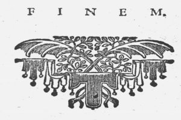

DISSERTATIO PHILOSOPHICA 23 instrumento nunquam commode exequi poterunt, hodiernis enim temporibus: qui velociter cantat, bene cantat. Respondeo: si perfectio musices in velocitate executionis consistit, lubens fateor, illam maximum perfectionis hujus gradum attigisse, meumque instrumentum fore inutilissimum; verum dantur tamen quidam (quamvis pauci admodum) qui norint, non ut aures tantum tangat aut delectet, sed ut corda nostra animosque moveat, hunc esse solum nobilissimae artis musicis 
|